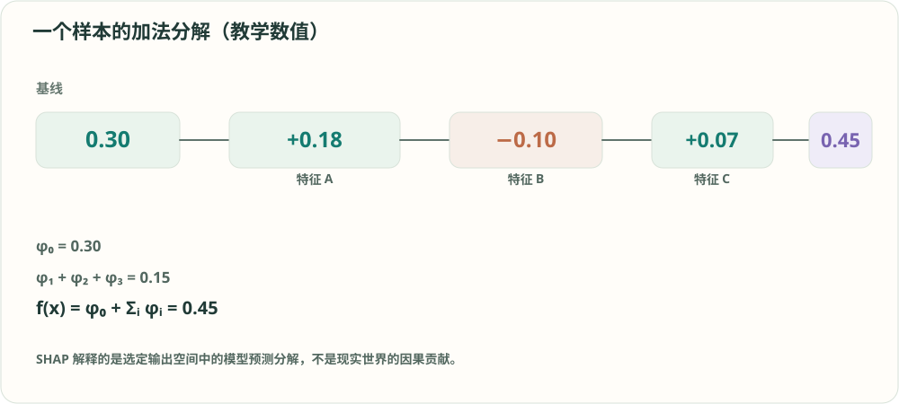
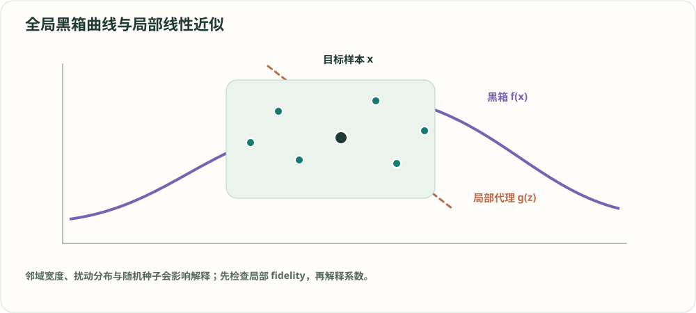
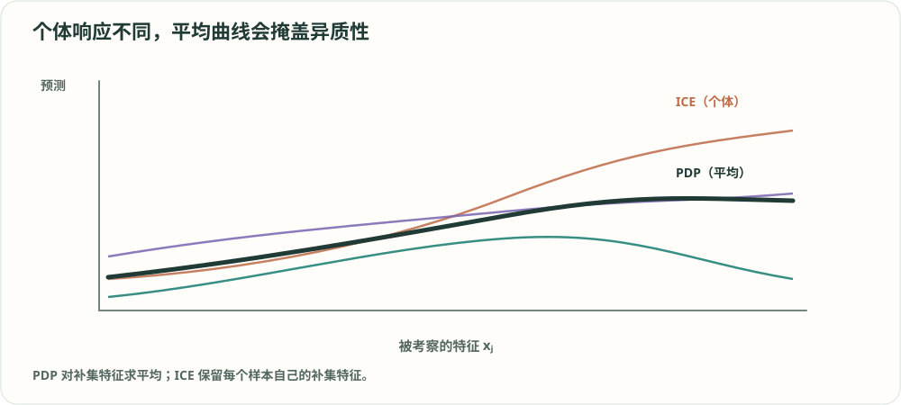

模型可解释性：SHAP、LIME 与预测响应的边界
解释工具回答的是模型如何产生预测，而不是现实世界为什么发生某件事。通过 Shapley 加法分解、局部代理模型和 PDP/ICE，理解全局与个体解释、背景分布、特征相关性及稳定性。
01 · 先区分模型解释、预测解释与因果解释
模型可解释性至少有三个不同层次。全局解释试图总结模型在一批样本上的总体行为；局部解释解释某一个样本的模型输出；因果解释则试图回答对现实系统施加干预会发生什么。SHAP、LIME、PDP 和 ICE 主要属于前两类，不能单凭它们得到因果结论。
一个解释可以忠实于模型，却仍然不能说明模型是否合理。若模型学到了数据泄漏、历史歧视代理、错误标签或不稳定的相关性，解释工具也可能忠实地展示这些行为。解释工作应该与数据审计、模型验证、领域知识和受影响人群评估结合。
02 · 内生可解释模型与事后解释
线性模型的系数、浅层决策树的路径、加性模型的形状函数，能直接暴露一部分决策结构；随机森林、梯度提升树与神经网络通常更复杂，常借助事后方法分析。可解释性不是一个简单的“白盒/黑盒”二元标签：线性模型在强共线特征下系数也可能不稳定，复杂模型也可能存在可验证的局部结构。
在高风险场景中，先问是否能用足够好的内生可解释模型完成任务，再考虑事后解释。不能仅因某个解释图看起来直观，就把它当成法规、审计或公平性要求的自动满足证明。
03 · SHAP：把一次预测分解成基线与特征贡献
SHAP 将特征看作合作博弈中的参与者，把某个特征集合的模型输出定义为联盟价值。一个特征的 Shapley 值，是它加入所有可能特征子集时带来的边际变化的加权平均。权重保证不同规模的子集都按组合数得到相应考虑：
在常见的加法解释形式中，单样本预测可写为 f(x)=φ₀+Σᵢφᵢ。φ₀ 是所选背景分布下的基线输出，φᵢ 是特征贡献。务必说明解释的是哪个输出空间：某些树模型的默认 raw 输出可能是 log-odds 或 margin，并非 predict_proba 的概率。

全局常见做法是计算每个特征 SHAP 绝对值的样本均值，衡量其平均贡献幅度；它不保留正负方向，也不等同于因果重要性。SHAP 的解释还取决于“缺失特征”如何处理：interventional 与 tree-path-dependent 等设定在相关特征下可能给出不同归因。
04 · LIME：在一个样本附近拟合简单代理
LIME 不要求复杂模型整体可解释，而是围绕待解释样本生成扰动，在黑箱模型上查询这些扰动的预测，再根据距离赋予权重，拟合一个局部简单模型。目标可写成：
这里 f 是待解释黑箱，g 是局部代理，πₓ 是围绕样本 x 的邻域权重，Ω(g) 控制代理复杂度。LIME 的结果依赖扰动分布、距离定义、核宽度、特征离散化与随机种子。一个局部代理如果拟合得不好，就不应继续解读其系数。

SHAP 与 LIME 不是“全局解释和局部解释”的简单二选一：SHAP 可以汇总很多局部归因得到全局概览，LIME 也能对多个代表样本做解释集合；两者各自依赖背景、扰动和模型查询设定。
05 · PDP 与 ICE：平均响应和个体响应
部分依赖图（PDP）考察一组特征 S 被固定为某个值时，对补集特征取样本平均后的模型输出。单特征情形可写为：
ICE 则对每一个样本分别绘制 f(x_S,x_C^(i))，能显示不同样本的响应是否有异质性。PDP 曲线可能把高度相关特征组合成现实中很少出现的输入，例如将一个人群的年龄固定到极端值，同时保留与之不一致的收入或职业特征。

因此解释图旁应展示特征分布、相关性与取值支持范围；不要把模型在训练分布之外的外推响应当成现实规律。对于树模型，PDP 的 recursion 与 brute 计算方式在某些相关特征情形下可能不同，具体应参考所用估计器与实现。
06 · 解释可靠性：稳定、忠实、可行动分别检查
忠实度问解释是否准确近似模型行为；稳定性问相近样本、随机种子或轻微数据扰动下解释是否大幅变化；可行动性问被解释特征是否能被实际干预，以及这种改变是否在数据分布内合理。三者不是同一个指标。
共线特征可能互相分摊 SHAP 归因；Permutation Importance 可能因替换一个相关特征后另一个仍可替代而低估单个特征的重要性；PDP 可能产生不现实组合；LIME 的局部扰动可能落在数据稀疏区。解释报告应记录背景样本、模型版本、输出空间、特征处理、扰动参数与解释计算版本。
07 · 离线实验：树模型 SHAP 加法检查
使用 scikit-learn 内置 Diabetes 回归数据做纯技术演示，不用于任何临床判断。训练随机森林后，使用 TreeExplainer 的 tree_path_dependent 模式，以训练样本在树路径中的覆盖数作为参考分布，解释保留测试样本，并检查基线加贡献之和是否回到同一输出空间的模型预测。
import numpy as np
import shap
from sklearn.datasets import load_diabetes
from sklearn.ensemble import RandomForestRegressor
from sklearn.model_selection import train_test_split
X, y = load_diabetes(return_X_y=True, as_frame=True)
X_train, X_test, y_train, y_test = train_test_split(
X, y, test_size=0.25, random_state=17)
model = RandomForestRegressor(
n_estimators=80, min_samples_leaf=3, random_state=17, n_jobs=1)
model.fit(X_train, y_train)
explainer = shap.TreeExplainer(
model, feature_perturbation="tree_path_dependent")
explanation = explainer(X_test.iloc[:5])
prediction = model.predict(X_test.iloc[:5])
reconstructed = (
np.asarray(explanation.base_values).reshape(-1)
+ explanation.values.sum(axis=1)
)
print("SHAP values shape:", explanation.values.shape)
print("model output:", np.round(prediction, 3))
print("base + contributions:", np.round(reconstructed, 3))
np.testing.assert_allclose(reconstructed, prediction, rtol=1e-4, atol=1e-4)
assert explanation.values.shape == (5, X.shape[1])需要 Python 3.10+、NumPy、scikit-learn 和 SHAP。背景数据子集、模型输出空间和相关特征假设都会影响解释；这里验证的是加法一致性，不是解释正确了现实因果机制。
08 · 离线实验：LIME 风格的局部线性代理
下面实现一个简化的表格数据局部代理：围绕一个测试样本生成扰动、按距离加权，用 Ridge 拟合黑箱输出。它帮助观察局部近似的机制，不是 LIME 官方实现的逐项复现，也没有处理类别特征的专用可解释表示。
import numpy as np
from sklearn.datasets import load_diabetes
from sklearn.ensemble import RandomForestRegressor
from sklearn.linear_model import Ridge
from sklearn.model_selection import train_test_split
X, y = load_diabetes(return_X_y=True)
X_train, X_test, y_train, y_test = train_test_split(
X, y, test_size=0.25, random_state=17)
black_box = RandomForestRegressor(
n_estimators=60, min_samples_leaf=3, random_state=17, n_jobs=1)
black_box.fit(X_train, y_train)
rng = np.random.default_rng(17)
x0 = X_test[0]
scale = X_train.std(axis=0)
scale = np.where(scale > 0, scale, 1.0)
perturbed = x0 + rng.normal(0, 0.35, size=(500, X.shape[1])) * scale
distance = np.sqrt(np.mean(((perturbed - x0) / scale) ** 2, axis=1))
weights = np.exp(-(distance / 0.75) ** 2)
black_box_output = black_box.predict(perturbed)
local_model = Ridge(alpha=1.0)
local_model.fit(perturbed, black_box_output, sample_weight=weights)
target = float(black_box.predict(x0.reshape(1, -1))[0])
surrogate = float(local_model.predict(x0.reshape(1, -1))[0])
weighted_mse = np.average(
(black_box_output - local_model.predict(perturbed)) ** 2,
weights=weights)
print("black-box prediction:", round(target, 3))
print("local surrogate at x:", round(surrogate, 3))
print("weighted local MSE:", round(float(weighted_mse), 4))
print("local coefficients:", np.round(local_model.coef_, 3))
assert np.isfinite(weighted_mse)
assert np.isfinite(surrogate)需要 NumPy 和 scikit-learn。应同时报告局部拟合误差与扰动范围；若误差很大或邻域远离数据支持区域，局部系数不值得解释。改变随机种子或核宽度后还应做稳定性检查。
09 · 来源与审查边界
一份完整解释报告至少包含模型与数据版本、解释对象、背景/扰动样本、输出空间、超参数、局部拟合误差或一致性检查、特征相关性说明和不应推断的结论。解释是模型审查的一项证据，不是准确率、因果识别或公平性证明的替代品。